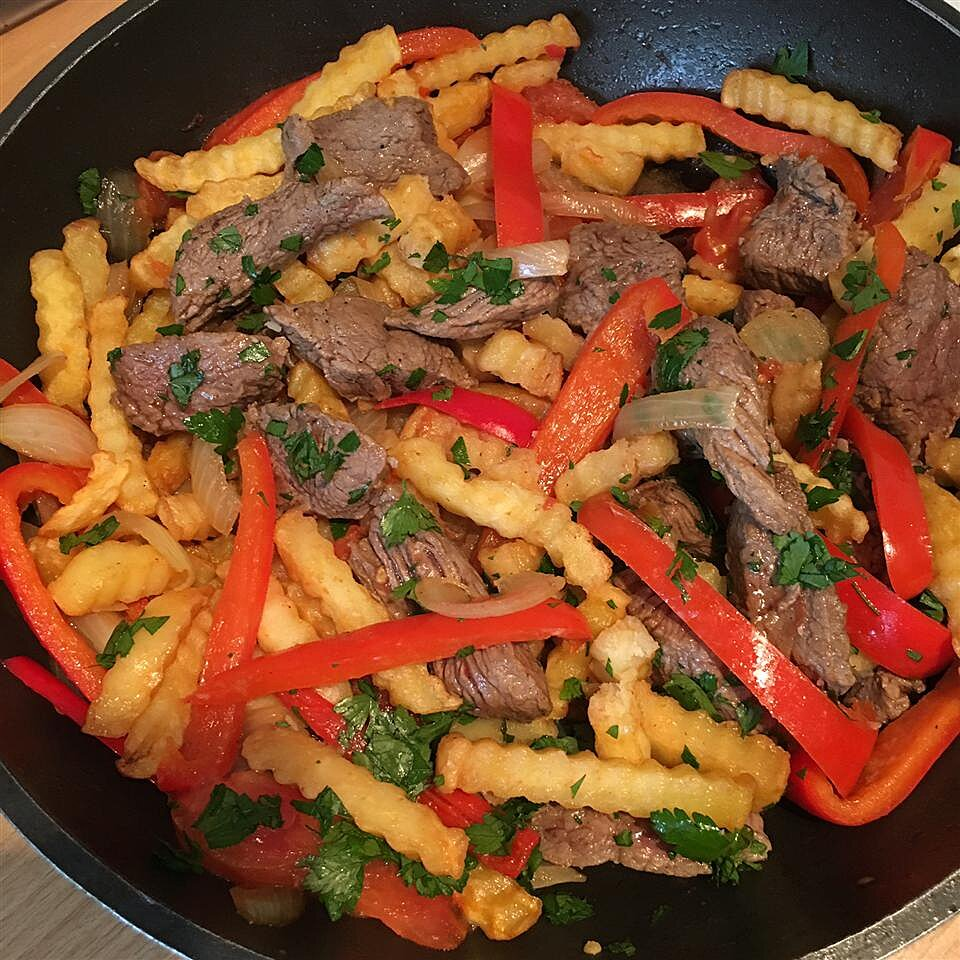

Lomo saltado

Description
This is a traditional, very easy dish to make. I might add that it's very popular with finicky kids and adults as well.
Ingredientes
- 1 (16 ounce) package frozen French fries
- vegetable oil as needed
- 1 pound beef tri tip, sliced 1/8 to 1/4 inch thick
- salt and pepper to taste
Steps
- Prepare the bag of French fries according to package directions.
- While the French fries are cooking, heat the oil in a frying pan over medium-high heat. Season the sliced meat with salt and pepper to taste. Fry the meat until just cooked, and the juices begin to release. Remove the meat from the frying pan, then cook the onions, with additional oil if needed, until they are transparent. Stir in the tomato and aji amarillo; cook until the tomato softens. Pour in the vinegar and soy sauce, add the French fries, cover, and cook until the beef is done, about 3 minutes. Season to taste with salt and pepper, and sprinkle with chopped parsley to serve.